ఛందం
తెలుగు పద్య ఛందస్సు విశ్లేషణ
7 వినియోగ కథలు
chandamu.github.io
కథ 1
మొదటి పరిచయం
"ఇప్పుడే ఈ యాప్ చూశాను. ఇది ఏమి చేస్తుంది?"
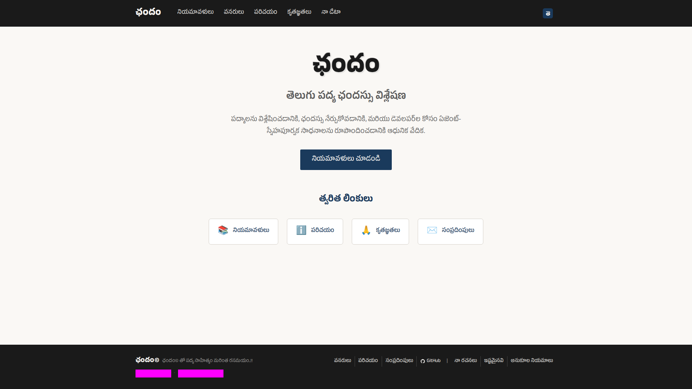
హీరో విభాగం మరియు వేగవంతమైన లింక్ కార్డులతో ముఖ పేజీ
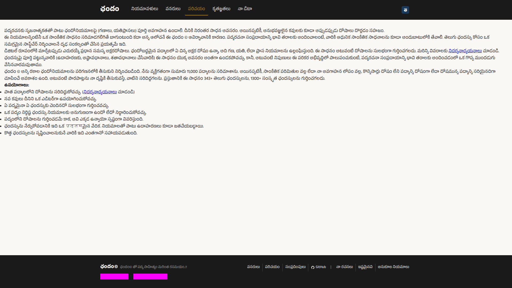
తెలుగు ఛందస్సు మరియు యాప్ ప్రయోజనం గురించి వివరణ

అందుబాటులో ఉన్న ఛందస్సు సమూహాలను కార్డుల రూపంలో చూపిస్తుంది
వర్గాల వారీగా అన్ని తెలుగు ఛందస్సుల జాబితా
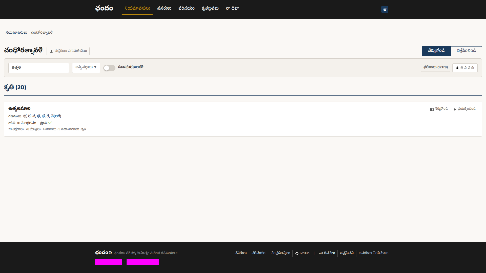
వెతికిన వెంటనే నియమాల జాబితా కుదించబడుతుంది
గణ రూపం, ఉదాహరణలు, మరియు "ప్రయత్నించండి" బటన్తో వివర పేజీ
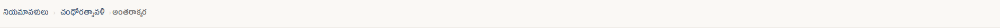
నావిగేషన్ మార్గం వల్ల వాడుకరికి స్థాన అవగాహన ఉంటుంది
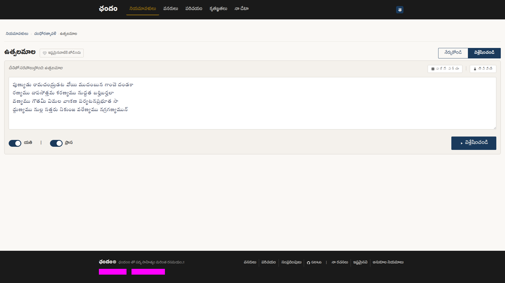
"ఉదాహరణ ప్రయత్నించండి" ద్వారా పద్యం స్వయంచాలకంగా ఎడిటర్లో నింపబడుతుంది

పచ్చ సూచికతో 100% సరిపోలిక మరియు గణ విభజన — పూర్తి సరిపోలిక వచ్చినప్పుడు "GitHub కి
సమర్పించండి" ఎంపిక అందుబాటులోకి వస్తుంది
కథ 2
లోతైన విశ్లేషణ
"నా పద్యాన్ని వివిధ నియమ సమూహాలలో పరిశీలించాలి"
ఆటో-గుర్తింపు ఆన్లో ఉన్న విశ్లేషణ పేజీ
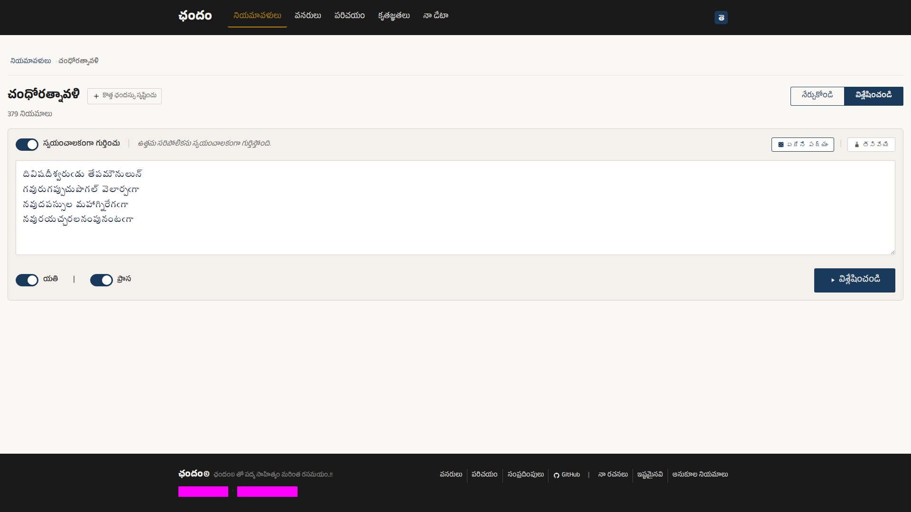
"యాదృచ్ఛికం" నొక్కితే నమూనా తెలుగు పద్యం ఎడిటర్లో నింపబడుతుంది
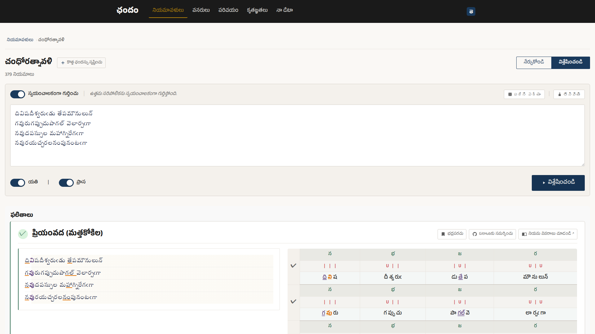
స్కోర్ ఆధారంగా క్రమబద్ధీకరించిన బహుళ సరిపోలిక కార్డులు

మాన్యువల్ మోడ్లో నిర్దిష్ట ఛందస్సు కోసం నియమ ఎంపిక
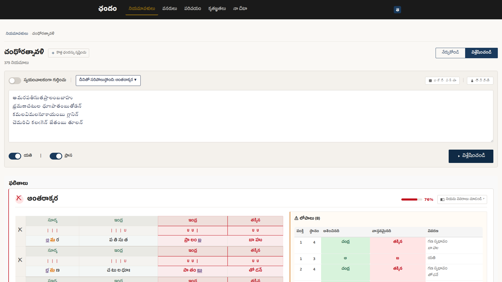
ప్రతి పాదానికి గణ విభజనతో నిర్దిష్ట నియమ విశ్లేషణ
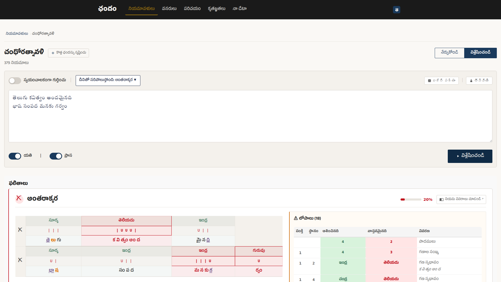
అసమానతలను చూపించే లోప సూచనలతో పాక్షిక సరిపోలిక

లోతైన విశ్లేషణ కోసం యతి మరియు ప్రాస టాగిల్ ఎంపికలు
కథ 3
ఇష్ట ఛందస్సుల సేకరణ
"నాకు అవసరమైన నియమాలను బుక్మార్క్గా ఉంచాలి"

ఇష్టాలలో చేరని స్థితిలో హృదయ చిహ్నం

ఒక్క క్లిక్తో ఇష్టాలలో చేరుతుంది. వెంటనే IndexedDBలో నిల్వ అవుతుంది.
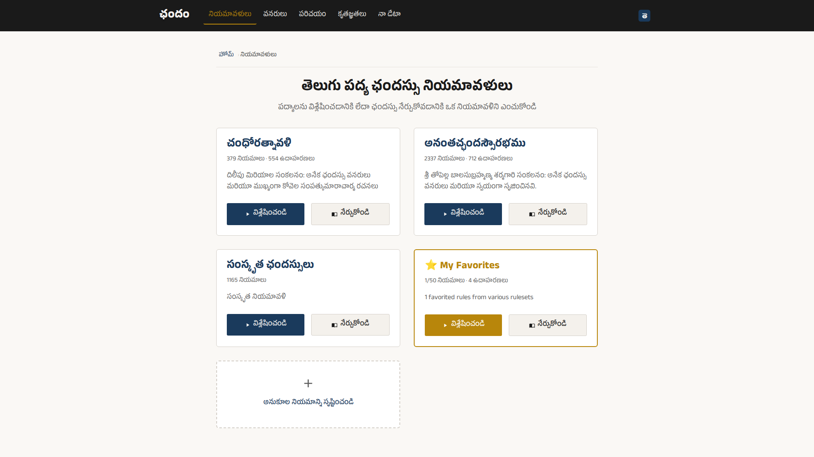
నియమ సమూహాల పేజీలో "ఇష్టాలు" కార్డు కనిపిస్తుంది

బుక్మార్క్ చేసిన అన్ని ఛందస్సులు ఇష్టాల జాబితాలో కనిపిస్తాయి
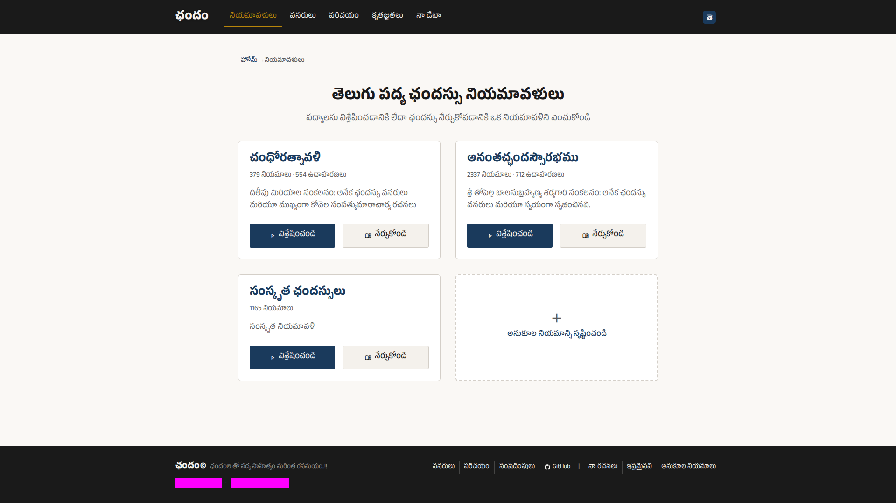
అన్ని ఇష్టాలు తొలగితే కార్డు కూడా కనిపించదు
కథ 4
స్వీయ నియమ రచన
"నాకు ఛందస్సు తెలుసు. నా స్వంత నియమాన్ని రూపొందించాలి."
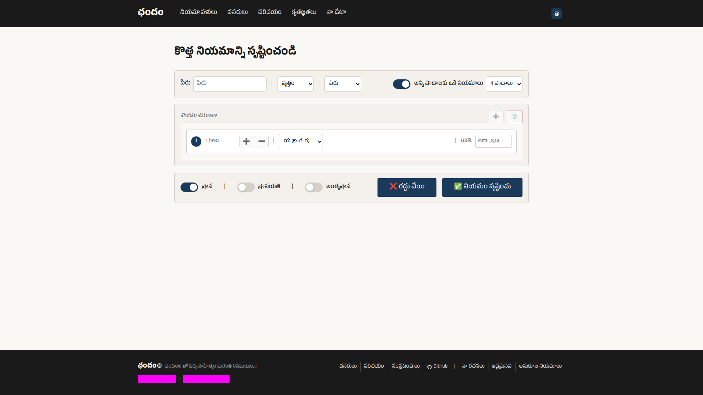
ఇన్లైన్ ప్యాటర్న్ బిల్డర్తో నియమ సృష్టి ఫారం
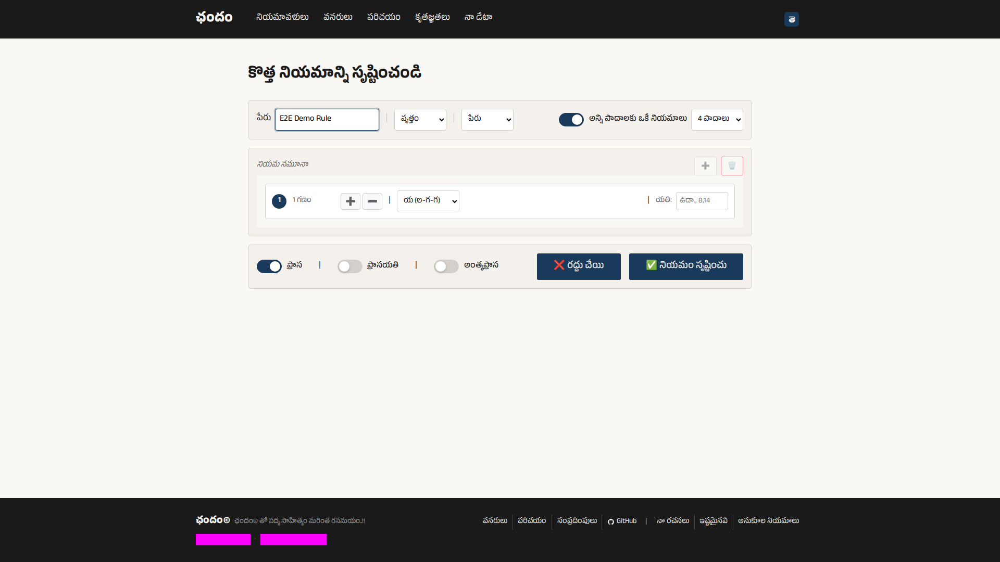
నియమ పేరు మరియు గణ నమూనాలు నమోదు చేసిన స్థితి

నియమం IndexedDBలో భద్రపరచబడినట్లు నిర్ధారణ
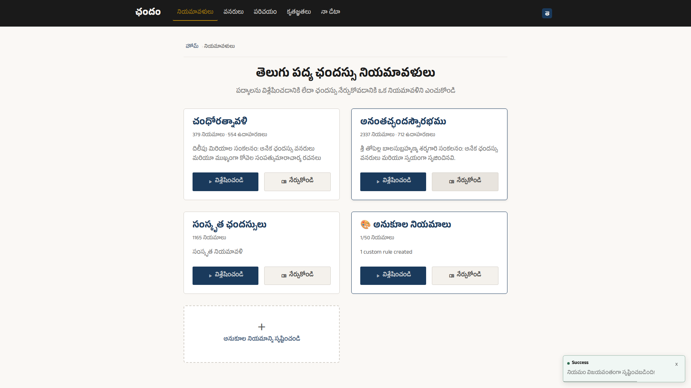
నియమ సమూహాల పేజీలో "స్వీయ నియమాలు" కార్డు
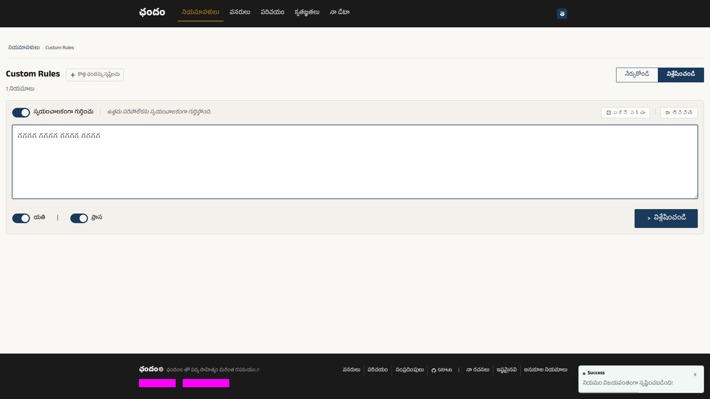
స్వయంగా నిర్వచించిన ఛందస్సులపైనా విశ్లేషణ సక్రియంగా పనిచేస్తుంది
కథ 5
సముదాయానికి భాగస్వామ్యం
"నాకు మంచి ఉదాహరణ దొరికింది. దాన్ని పంచుకుంటాను."

100% సరిపోలికతో GitHub సమర్పణ బటన్ అందుబాటులోకి వస్తుంది
కథ 6
మొబైల్ అనుభవం
"నా ఫోన్లో ఈ యాప్ను ఉపయోగించడం"
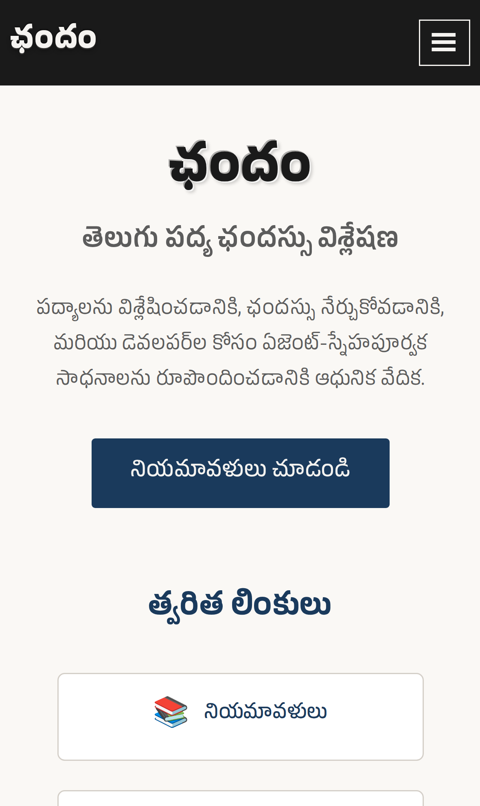
మొబైల్లో సరిగ్గా సరిపడే ముఖ పేజీ

హాంబర్గర్ మెనూ విస్తరించిన స్థితి
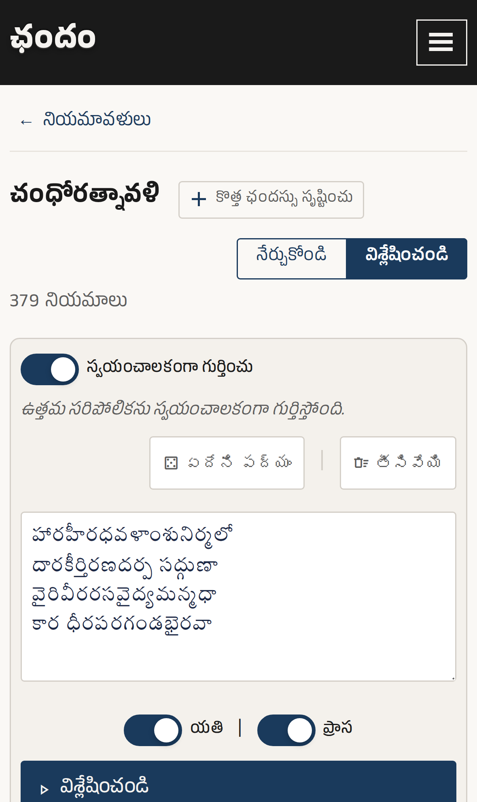
చిన్న తెరపై పూర్తి వెడల్పుతో ఎడిటర్
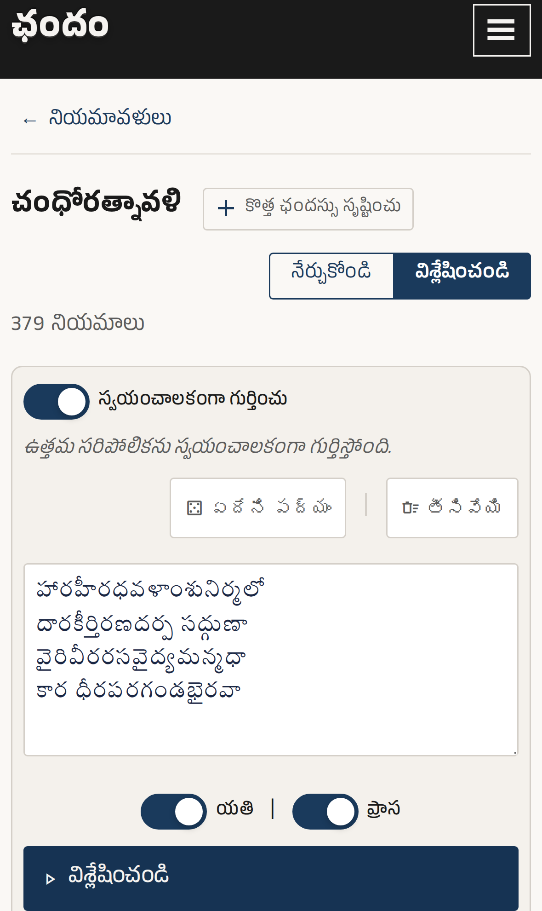
సరిపోలిక కార్డులు తెర పరిమాణానికి అనుగుణంగా క్రమబద్ధంగా వరుసపడతాయి
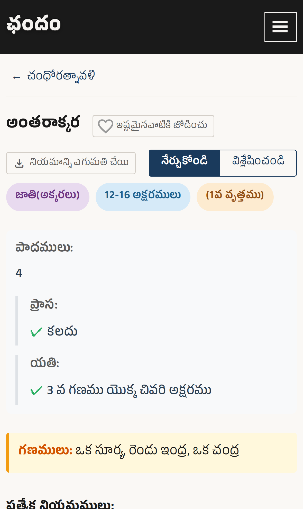
మొబైల్లో కూడా ఇష్టాల హృదయ బటన్ సులభంగా ఉపయోగించవచ్చు
కథ 7
గ్రంథంగా ఎగుమతి
"అన్ని ఛందస్సుల ముద్రణకు అనుకూల సూచిక కావాలి"
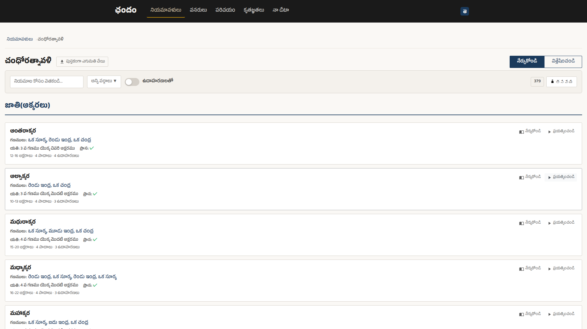
ఫిల్టర్ పట్టీలోని "గ్రంథంగా ఎగుమతి" బటన్ HTML పుస్తకాన్ని సృష్టిస్తుంది
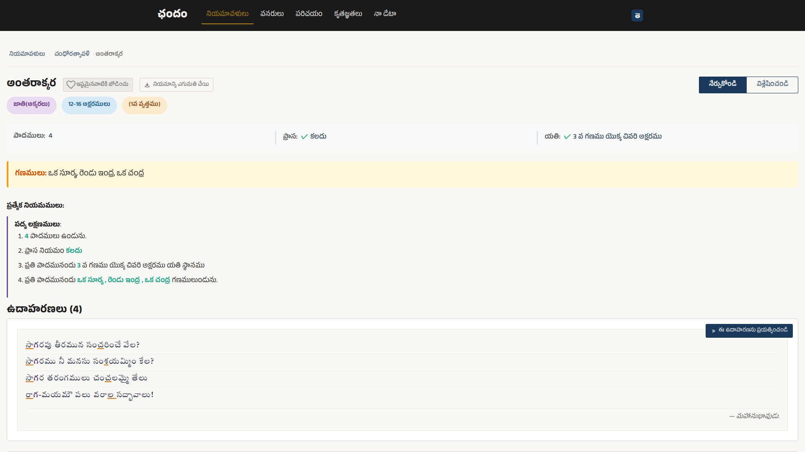
ప్రతి నియమాన్ని పూర్తి సమాచారం మరియు ఉదాహరణలతో వేరుగా కూడా ఎగుమతి చేయవచ్చు